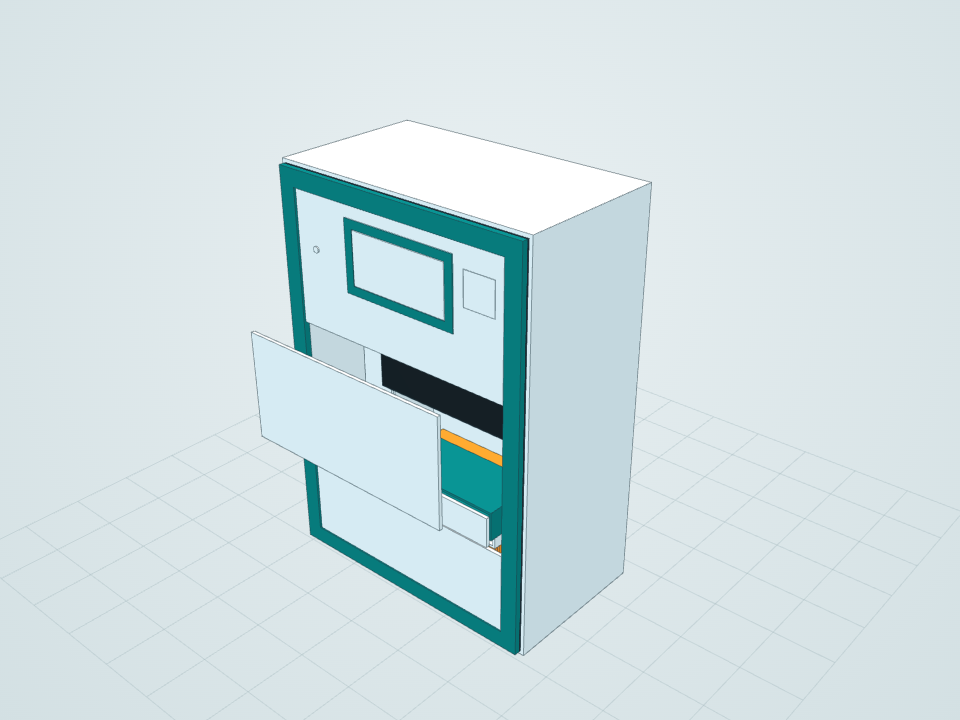
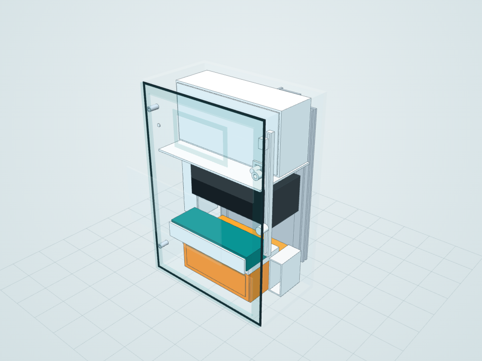
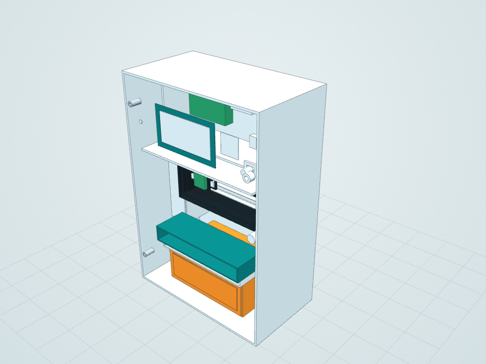

Partition clamp
Padded opposed jaws for 12–50 mm toilet cubicle partitions.
Luma Retrofit is a free, parametric CAD design for a removable urinalysis reader that fits existing toilets with six no-drill mounts. Explore it in 3D in your browser, or download STEP, STL and SolidWorks files.

Engineering prototype (Rev A), not a medical device. This design has not been clinically validated or load tested and is not a fabrication release. Anyone who builds or deploys it is responsible for safety and regulatory approval.
Luma is a compact reflectance reader for urine test strips, designed as a retrofit health kiosk for public toilets that already exist. A user places a wetted strip in a disposable carrier. An RGB colour sensor with two white LEDs scans the pads, the result is shown privately on the display, and the used strip drops into a closed waste cartridge. Unused strips stay sealed in a separate cassette, away from the measurement path.
The model is generated by code: a C# program drives the SolidWorks API to build all 109 parts from a single dimension table, then checks the result. Everything is exported to open formats, so anyone can study, modify, 3D print or build on this point-of-care diagnostics concept without owning SolidWorks.
Six reversible mounts share one 180 × 260 mm adapter plate. No new holes, wiring or plumbing in the building.
An offline 3D viewer with X-ray, part details and 18 configurations. Just double-click START.html.
A STEP assembly for every configuration, an STL for every part and the native SolidWorks model.
One layout table drives the whole design. A rebuild regenerates parts, assembly, exports and viewer.
Zero static interferences in all 12 mount/power configurations and all 125 sketches fully constrained.
Load cases, installer site survey, service sequence, material choices and cost allowances.
The same reader enclosure attaches to whatever the site offers. Each mount comes with DC or battery power.
Padded opposed jaws for 12–50 mm toilet cubicle partitions.

Split clamp with elastomer inserts for a 32 mm post or rail.

Padded hook over the top of a partition, 55 mm gap.

Free-standing ballasted base, placed without anchors.

Removable pads for glass or glazed tile, with a safety tether. Reserved concept.

Magnet pots for structural steel, with a safety tether. Reserved concept.

Dry electronics at the top, the optical scan chamber in the centre, clean strips, sample drawer and waste cartridge below a wet/dry barrier.

Cassettes, trays and the waste cartridge are all removed from the front, so clean stock is never exposed to used strips.
The build guide has the complete parts list with specifications: Arduino Uno, TCS34725 colour sensor, LEDs, stepper motor, battery, switches, printed and stainless-steel parts. It also has a step-by-step assembly showing exactly where every component goes, and a suggested wiring table.
Pick the format that matches your software. Everything is in millimetres.
Rotate, see inside with X-ray and inspect every part's material and size. Works offline.
Open viewerOne STEP AP214 file with colours for each mount and power configuration.
STEP filesOne binary STL per part. Check the bill of materials for which parts are printed and which are bought.
STL filesThe full assembly with 109 parts and every mount and power configuration, plus an exploded assembly and a drawing.
SolidWorks files| Enclosure | 230 W × 330 H × 134 D mm; 150 mm projection with the rear adapter |
|---|---|
| Estimated dry mass | ≈ 5.4 kg (partition clamp, DC power); analytic estimate, not a certified value |
| Electronics allowance | Arduino Uno, TCS34725 RGB colour sensor, two white LEDs, display, status LED, buzzer, fuse module |
| Optics | Black optical chamber, moving sensor/LED scan carriage on a lead-screw rail, calibration tile |
| Power | DC input with cable gland and strain relief, or a removable protected battery pack |
| Materials | PC-ABS enclosure, polypropylene wetted trays, 304 stainless steel mounts, EPDM seals and pads |
| Configurations | 6 mounts × 2 power options, plus installed, service and exploded views |
| License | MIT: free to use, modify, manufacture and sell |
Luma Retrofit is an open-source CAD design for a removable urine test strip reader that can be added to existing public toilets using reversible mounts, without drilling, new wiring or plumbing.
Yes. The model opens in any modern web browser through the included offline 3D viewer. STEP files work in FreeCAD, Fusion 360, Onshape and other CAD programs, and STL files work in any slicer. The native SolidWorks files need SolidWorks 2026 or newer.
Yes. The project is released under the MIT License, so you may use, modify, manufacture and sell it, including commercially, as long as you keep the copyright notice. It is provided as is, without warranty.
No. Luma is a Rev A engineering prototype. It is not a fabrication release and has not been clinically validated. Anyone who builds or deploys it is responsible for safety, structural and regulatory approval.
The design reserves space for an Arduino Uno controller, a TCS34725 RGB colour sensor and two white LEDs on a moving scan carriage, plus a display, status LED, buzzer and DC or battery power. Firmware is not part of the repository yet.
Yes. Every part is available as an STL file, and the enclosure parts are designed as PC-ABS prototype prints. Check the Process column in the bill of materials: parts named envelope are only space reservations for purchased components, and the mounts are designed in stainless steel.
Every part size and position is defined in the Layout table in src/LumaBuilder.cs. Edit it and run src/Build.ps1 with SolidWorks installed to rebuild the whole model, exports and viewer.